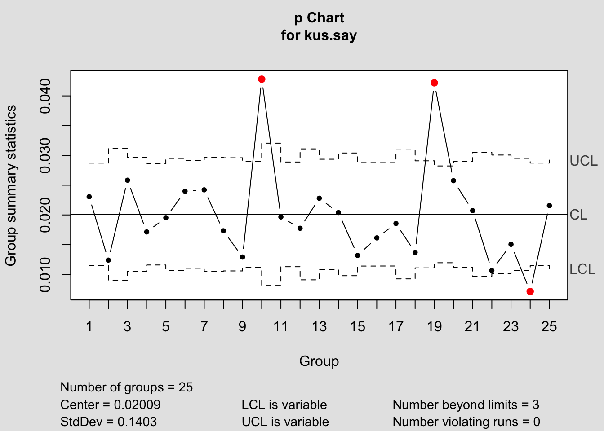
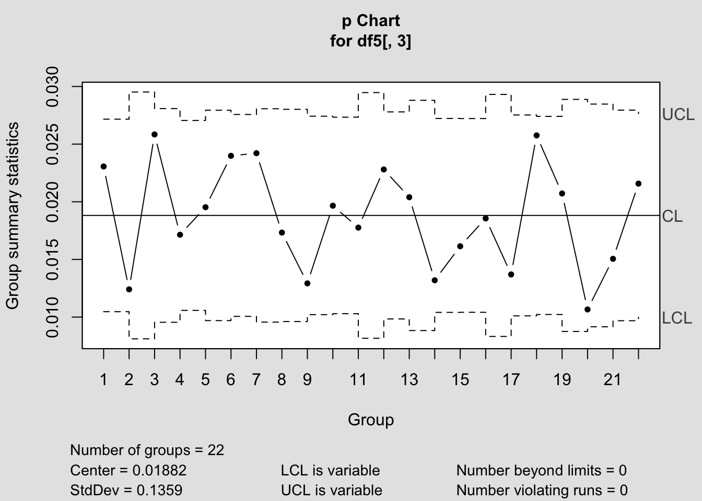
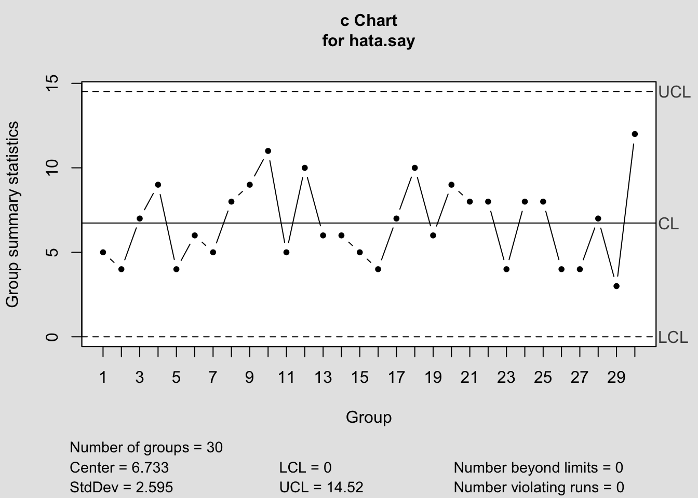
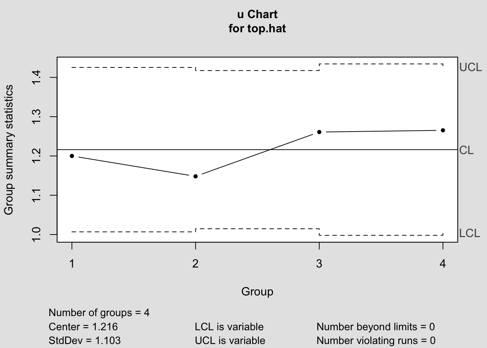

Bölüm 9 Ölçülemeyen Özellikler için Kontrol Diyagramları
Birçok kalite özelliği sayısal olarak uygun şekilde ifade edilemez. Bu gibi durumlarda, genellikle incelenen her bir öğeyi, o kalite özelliğiyle ilgili spesifikasyonlara uygun veya uygun olmayan olarak sınıflandırılır. Bu tür ölçülemeyen özelliklere örnek olarak bir kredi başvurusu süresince gerçekleşen hata sayısı, bir hastanede gerçekleşen tıbbi hataların sayısı gibi örnekler verilebilir.
Ölçülebilir özellikler için oluşturulan kontrol diyagramları tabi ki daha fazla bilgi içerdiğinden verimlidir. Ancak her üretim tipinde ölçülebilir değerlerin elde edilmesi mümkün olamamaktadır. Özellikle hizmet endüstrilerinde ve imalat dışı kalite geliştirme çalışmalarında ölçülemeyen özellikler için kontrol diyagramları oldukça faydalıdır çünkü bu ortamlarda bulunan kalite özelliklerinin çoğu sayısal ölçekte kolayca ölçülememektedir.
9.1 p kontrol diyagramı
Bir partideki hatalı ya da kusurlu oranı için kullanılan p kontrol diyagramı, Binom dağılımını esas almaktadır.
p kontrol diyagramında, LCL, CL ve UCL aşağıdaki formüller kullanılarak hesaplanabilir.
\(UCL_{p}=\bar{p}+3\sqrt{\frac{\bar{p}(1-\bar{p})}{n}}\)
\(CL_{p}=\bar{p}\)
\(LCL_{p}=\bar{p}-3\sqrt{\frac{\bar{p}(1-\bar{p})}{n}}\)
Ölçülemeyen özellikler için kontrol diyagramlarında uygulanacak kontrol dışılık testleri;
- Merkez çizgisinin \(\pm3\sigma\) aralığının dışında 1 nokta
- Merkez çizgisinin aynı tarafında yer alan ardıl 9 nokta
- Sürekli artan ya da azalan 6 nokta
- Bir artıp bir azalan 14 nokta
olarak sıralanabilir.
Örnek 1: Büyük bir e-ticaret şirketi, müşterilerinden doğru olmayan faturalarla ilgili şikayetler almaktadır. Altı sigma projesinin ölçüm evresi boyunca bu durumu iyileştirmek amaçlanmış ve20 haftalık zaman dilimi için hatalı faturaları kontrol etmek amacı ile 200 faturalık rassal örnekler alınmıştır. Elde edilen değerler aşağıdaki yer almaktadır.
Hatalı sayısı işlem kolaylığı açısından h.say değişkenine atanmıştır.
## [1] 412p kontrol diyagramı için ilk olarak haftalara ait hata oranlarının hesaplanması gerekmektedir. 20 haftalık zaman dilimi için hatalı faturaların kontrolü amacıyla 200 faturalık rassal örnekler alındığı bilgisi soruda verilmişti.
Bu hesaplamalara göre ortalama hata oranı \(\bar{p}\);
## [1] 0.103Hatalı oranı için UCL, CL ve LCL aşağıdaki gibi elde edilir;
## [1] 0.1675## [1] 0.1675## [1] 0.103## [1] 0.03852## [1] 0.0385Kontrol limitleri hesaplandıktan sonra kontrol diyagramı elde edilerek değişkenliğin özel bir nedeninin olup olmadığı kontrol edilmelidir.

## List of 11
## $ call : language qcc(data = h.say, type = "p", sizes = 200)
## $ type : chr "p"
## $ data.name : chr "h.say"
## $ data : num [1:20, 1] 23 23 20 21 17 22 24 20 18 17 ...
## ..- attr(*, "dimnames")=List of 2
## $ statistics: Named num [1:20] 0.115 0.115 0.1 0.105 0.085 0.11 0.12 0.1 0.09 0.085 ...
## ..- attr(*, "names")= chr [1:20] "1" "2" "3" "4" ...
## $ sizes : num [1:20] 200 200 200 200 200 200 200 200 200 200 ...
## $ center : num 0.103
## $ std.dev : num 0.304
## $ nsigmas : num 3
## $ limits : num [1:20, 1:2] 0.0385 0.0385 0.0385 0.0385 0.0385 ...
## ..- attr(*, "dimnames")=List of 2
## $ violations:List of 2
## - attr(*, "class")= chr "qcc"Kontrol diyagramı incelendiğinde kontrol limitlerinin dışında gözlenen nokta bulunmamış ve kontrol testleri de herhangi bir özel değişkenlik göstermemiştir. Prosesin istatistiksel olarak kontrol altında ve mevcut değişkenliğin rassal olduğu söylenebilir.
p kontrol diyagramları örneklem büyüklüğünün sabit olmadığı durumlarda da kullanılabilir.
Örnek 2: Bir modem üreticisi, Mart ayının sonu ve Nisan ayının tamamı için ürünlerin son testinden veri toplamıştır. Alt grup büyüklüğü, 1 günlük muayene sonuçlarıdır. 25 alt grup için muayene sonuçları aşağıda yer almaktadır.
Günlük muayene sayısındaki değişkenlik farklı sebeplerden kaynaklanabilir. Makine arızaları, farklı üretim gereksinimlerine sahip ürünler değişkenliğe neden olmaktadır. 1238 muayene ileen düşük değer 9 Nisan tarihine aittir. Bu tarihte ikinci vardiya çalışılmamıştır. 2768 muayene ile 22 Nisan tarihinde en yüksek değer gerçekleşmiştir. Bu değer, fazla mesaiden kaynaklanmıştır.
Öncelikle kontrol diyagramının merkez çizgisini oluşturacak olan ortalama kusurlu oranı (\(\bar{p}\)) hesaplanmalıdır.
Örneklem büyüklükleri farklılık gösterdiğinden her bir örneklem için kontrol limitlerinin hesaplanması gerekmektedir.
UCL.p=c()
LCL.p=c()
for(i in 1:25){
UCL.p[i]=pbar+3*sqrt(pbar*(1-pbar)/muay.s[i])
LCL.p[i]=pbar-3*sqrt(pbar*(1-pbar)/muay.s[i])
}
head(cbind(UCL.p,LCL.p))## UCL.p LCL.p
## [1,] 0.02871 0.011473
## [2,] 0.03114 0.009042
## [3,] 0.02966 0.010523
## [4,] 0.02860 0.011588
## [5,] 0.02951 0.010673
## [6,] 0.02913 0.011052Her bir alt grup için kusurlu oranı elde edilirse,
## [1] 0.02306 0.01241 0.02584 0.01714 0.01953 0.02399p kontrol diyagramı;

## List of 11
## $ call : language qcc(data = kus.say, type = "p", sizes = muay.s)
## $ type : chr "p"
## $ data.name : chr "kus.say"
## $ data : num [1:25, 1] 55 18 50 42 39 52 47 34 29 53 ...
## ..- attr(*, "dimnames")=List of 2
## $ statistics: Named num [1:25] 0.0231 0.0124 0.0258 0.0171 0.0195 ...
## ..- attr(*, "names")= chr [1:25] "1" "2" "3" "4" ...
## $ sizes : num [1:25] 2385 1451 1935 2450 1997 ...
## $ center : num 0.0201
## $ std.dev : num 0.14
## $ nsigmas : num 3
## $ limits : num [1:25, 1:2] 0.01147 0.00904 0.01052 0.01159 0.01067 ...
## ..- attr(*, "dimnames")=List of 2
## $ violations:List of 2
## - attr(*, "class")= chr "qcc"Kontrol diyagramı incelendiğinde prosesin istatistiksel olarak kontrol altında olmadığı görülmektedir. 9, 22 ve 29 Nisan tarihlerindeki ölçümlerin kontrol limitlerini aştığı gözlenmektedir. Bu üç noktanın da özel değişkenlik sebebi olduğu anlaşıldığından, gözlemlerin elimine edilerek hesaplamaların tekrarlanması gerekmektedir.

## List of 11
## $ call : language qcc(data = df5[, 3], type = "p", sizes = df5[, 2])
## $ type : chr "p"
## $ data.name : chr "df5[, 3]"
## $ data : num [1:22, 1] 55 18 50 42 39 52 47 34 29 45 ...
## ..- attr(*, "dimnames")=List of 2
## $ statistics: Named num [1:22] 0.0231 0.0124 0.0258 0.0171 0.0195 ...
## ..- attr(*, "names")= chr [1:22] "1" "2" "3" "4" ...
## $ sizes : num [1:22] 2385 1451 1935 2450 1997 ...
## $ center : num 0.0188
## $ std.dev : num 0.136
## $ nsigmas : num 3
## $ limits : num [1:22, 1:2] 0.01047 0.00812 0.00955 0.01058 0.00969 ...
## ..- attr(*, "dimnames")=List of 2
## $ violations:List of 2
## - attr(*, "class")= chr "qcc"9.2 np kontrol diyagramı
Ölçülemeyen özellikler için hatalı ya da kusurlu sayısının analizinde ve alt grup büyüklükleri eşit olması durumunda np kontrol diyagramları kullanılmaktadır. Kontrol limitleri merkez çizgisinden \(\pm3\sigma\) uzaklıkta oluşmaktadır.Standart sapma değeri;
\(\sigma=\sqrt{n\bar{p}(1-\bar{p})}\)
eşitliği ile hesaplanır.
np kontrol diyagramında, LCL, CL ve UCL aşağıdaki formüller kullanılarak hesaplanabilir.
\(UCL_{np}=n\bar{p}+3\sqrt{n\bar{p}(1-\bar{p})}\)
\(CL_{np}=n\bar{p}\)
\(LCL_{np}=n\bar{p}-3\sqrt{n\bar{p}(1-\bar{p})}\)
Ölçülemeyen özellikler için kontrol diyagramlarında uygulanacak kontrol dışılık testleri p kontrol diyagramlarında olduğu gibi bu yöntem için de incelenmelidir.
Örnek 1: Bir analist bir üretim vardiyasında her biri 200 üründen oluşan 10 farklı örneklem almış ve her bir örneklemdeki hatalı parça sayısını belirleyerek kaydetmiştir. Hata sayıları aşağıdaki tabloda yer almaktadır. Kontrol limitlerini elde ederek np kontrol diyagramını oluşturunuz.
## hata: 5 3 7 2 1 4 10 4 1 6## [1] 0.0215## [1] 4.3Kontrol limitlerinin hesabında gerekecek temel değerler olan \(\bar{p}\) ve \(n\bar{p}\) elde edildikten sonra kontrol limitleri hesabına geçilir.
## [1] 10.45## [1] 4.3## [1] -1.854Burada önemli nokta hata sayısının negatif olma ihtimalinin bulunmamasıdır. Bu bakımdan negatif hesaplanan LCL değeri 0 olarak alınır. Belirlenen limit değerleri ışığında kontrol diyagramı aşağıdaki gibi oluşur;
## List of 11
## $ call : language qcc(data = hata, type = "np", sizes = 200)
## $ type : chr "np"
## $ data.name : chr "hata"
## $ data : num [1:10, 1] 5 3 7 2 1 4 10 4 1 6
## ..- attr(*, "dimnames")=List of 2
## $ statistics: Named num [1:10] 5 3 7 2 1 4 10 4 1 6
## ..- attr(*, "names")= chr [1:10] "1" "2" "3" "4" ...
## $ sizes : num [1:10] 200 200 200 200 200 200 200 200 200 200
## $ center : num 4.3
## $ std.dev : num 2.05
## $ nsigmas : num 3
## $ limits : num [1, 1:2] 0 10.5
## ..- attr(*, "dimnames")=List of 2
## $ violations:List of 2
## - attr(*, "class")= chr "qcc"Kontrol diyagram çıktısında elde edilen StdDev değerinin kontrolü de aşağıdaki şekilde yapılabilir;
## [1] 2.051np kontrol diyagramında görüldüğü üzere kontrol limitlerini aşan gözlem bulunmamakta ve kontrol dışılık testinde değişkenlik gösteren gözlem bulunmamaktadır, proses kontrol altındadır ve elde edilen limitler evre II için kullanılabilir.
9.3 c kontrol diyagramı
c kontrol diyagramı eşit fırsattaki kusur sayısını kontrol etmek için kullanılır. Örneklem büyüklüğü sabittir. Bu eşit fırsat alanı; zaman alan ya da ürün grubu olabilir. Örneğin; bir saatteki iplik kırılmalarının sayısı, bir metrekare halıdaki kusur sayısı.
c kontrol diyagramında, LCL, CL ve UCL aşağıdaki formüller kullanılarak hesaplanabilir.
\(UCL_{c}=\bar{c}+3\sqrt{\bar{c}}\)
\(CL_{c}=\bar{c}\)
\(LCL_{c}=\bar{c}-3\sqrt{\bar{c}}\)
burada \(\bar{c}\) ortalama kusur sayısıdır.
Örnek 1: Bir banka tarafından gerçekleştirilen ATM cihazlarının tahkiki sırasında, ATM cihazı bazlı olarak 1 aylık döneme ait tespit edilen hata sayıları aşağıdaki tablodaki gibidir. Kontrol limitlerini hesaplayınız, kontrol diyagramını oluşturunuz.
Ortalama hata sayısı;
## [1] 6.733## [1] 14.52## [1] -1.051Hata sayısı değeri negatif olamayacağından LCL değeri 0 olarak alınır. Elde edilen kontrol limitlerine bağlı olarak c kontrol diyagramı aşağıdaki gibi çizilir.

## List of 11
## $ call : language qcc(data = hata.say, type = "c", sizes = 30)
## $ type : chr "c"
## $ data.name : chr "hata.say"
## $ data : num [1:30, 1] 5 4 7 9 4 6 5 8 9 11 ...
## ..- attr(*, "dimnames")=List of 2
## $ statistics: Named num [1:30] 5 4 7 9 4 6 5 8 9 11 ...
## ..- attr(*, "names")= chr [1:30] "1" "2" "3" "4" ...
## $ sizes : num [1:30] 30 30 30 30 30 30 30 30 30 30 ...
## $ center : num 6.73
## $ std.dev : num 2.59
## $ nsigmas : num 3
## $ limits : num [1, 1:2] 0 14.5
## ..- attr(*, "dimnames")=List of 2
## $ violations:List of 2
## - attr(*, "class")= chr "qcc"Kontrol diyagramı incelendiğinde, kontrol dışı bir noktanın olmadığı ve prosesin istatistiksel olarak kontrol altında olduğu görülmektedir.
9.4 u kontrol diyagramı
Ölçülemeyen niteliklerde ölçüm birimi başına hata sayısını kontrol etmek için u kontrol diyagramından faydalanılabilir. Örneklem büyüklüğü değişken ya da sabit olabilir.
u kontrol diyagramında, LCL, CL ve UCL aşağıdaki formüller kullanılarak hesaplanabilir.
\(UCL_{u}=\bar{u}+3\sqrt{\frac{\bar{u}}{n}}\)
\(CL_{u}=\bar{u}\)
\(LCL_{u}=\bar{u}-3\sqrt{\frac{\bar{u}}{n}}\)
burada \(\bar{u}\) ortalama kusur sayısıdır.
Örnek 1: Bir analist, her bir vardiyadaki kontrplak levhaların üretimini incelemekte ve üretilen kontrplak levhaların sayısını ve her bir levhadaki hata sayısını kayıt altına almaktadır. Muayene birimi, bir kontrplak levhadır. Analist tarafından toplanan veri, aşağıdaki tabloda yer almaktadır. u kontrol diyagramını oluşturunuz.
Sabit olmayan örneklem büyüklüklerinde her bir alt grup için kontrol limiti bulunduğunu daha önceki konu başlarında görmüştük, burada da her bir alt grup için ilgili büyüklüğe (n) bağlı olarak gerekli hesaplamalar yapılacaktır. Soruda yer alan değişkenler kodlamada aşağıdaki değişken isimleri ile adlandırılmıştır.
Kontrplak sayısı; kont
Toplam hata sayısı; top.hat
Kontrplak başına hata sayısı; kont2
Vardiya A
## [1] 1.216## [1] 1.425## [1] 1.216## [1] 1.007Vardiya B
## [1] 1.417## [1] 1.216## [1] 1.015C ve D vardiyaları da benzer şekilde hesaplanabilir veya vardiyaların tamamı tek bir döngüde yazılarak elde edilebilir.
limits=matrix(NA,4,2)
for (i in 1:4){
limits[i,1]=ubar-3*sqrt(ubar/kont[i])
limits[i,2]=ubar+3*sqrt(ubar/kont[i])}
colnames(limits)<-c("LCL","UCL")
round(limits,3)## LCL UCL
## [1,] 1.007 1.425
## [2,] 1.015 1.417
## [3,] 0.998 1.434
## [4,] 1.005 1.427Elde edilen kontrol limitleri için u kontrol diyagramı;

## List of 11
## $ call : language qcc(data = top.hat, type = "u", sizes = kont)
## $ type : chr "u"
## $ data.name : chr "top.hat"
## $ data : num [1:4, 1] 300 310 290 310
## ..- attr(*, "dimnames")=List of 2
## $ statistics: Named num [1:4] 1.2 1.15 1.26 1.27
## ..- attr(*, "names")= chr [1:4] "1" "2" "3" "4"
## $ sizes : num [1:4] 250 270 230 245
## $ center : num 1.22
## $ std.dev : num 1.1
## $ nsigmas : num 3
## $ limits : num [1:4, 1:2] 1.007 1.015 0.998 1.005 1.425 ...
## ..- attr(*, "dimnames")=List of 2
## $ violations:List of 2
## - attr(*, "class")= chr "qcc"Kontrol diyagramı incelendiğinde, üretim vardiyaları için kontrol dışılığın söz konusu olmadığı görülmektedir.